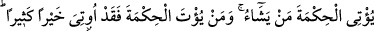
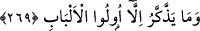

Yaptığınız infâkları bilir, asla ecrini zâyî etmez.
269. Allah, hikmeti dilediğine verir. Kime hikmet verilirse, ona pek çok hayır
verilmiş demektir. Ancak akıl sahipleri düşünüp ibret alırlar.
“Hikmet”ten maksad, Kur’ân’ın öğütleridir. Verilmesi ise beyân edilmesi ve bilip
kendisiyle amel etmeye muvaffak kılmaktır. Allah, hikmetin ne olduğunu güzelce açıklar,
öğretir ve onunla amel etmeye muvaffak kılar. Sonsuz ilmi, geniş fazlı mûcibince
hikmeti kullarından dilediğine verir. Nitekim size de bu âyeti indirmekle menfaatinize
olan nice ulvî hikmetler bildirmektedir. Bunu ganîmet biliniz ve bu emirlerle amel
etmeye koşunuz. Her kime ilim ve amel birlikte bahşedilirse o kimseye çok hayır
verilmiş olur. Zira bu şekilde her iki dünyanın da hayrını elde etmiş demektir. Bildirilen
hikmetlerden ancak nefsin temâyüllerine boyun eğmeyen, şüphe ve vehimlerden uzak
olan akıllar gereken öğüdü alabilirler.
Akıl sahiplerinden murâd, bildikleriyle amel eden hikmet ehli kimselerdir. Bu tarif,
akıl sahibi dahi olsa her mükellefi içine almaz. Çünkü aklı hevâsına galip gelmeyen
kimseler, bu hikmetlerden faydalanamazlar. O takdirde sanki akılsızmışlar gibi olur.
Denilmiştir ki, kendisine Kur’ân ilmi verilen kimsenin, sırf dünyalıkları sebebiyle
ehl-i dünyaya boyun eğmesi doğru değildir. Çünkü ona verilen şey büyük bir hayırdır.
Dünya ise az bir metâdır. Peygamber Efendimiz şöyle buyurmuştur: “Kur’ân
zenginliktir. O’ndan sonra hiçbir zenginlik yoktur.”[243]
Şeytan, zâhirde fakr duygusuna çağıran hakîkatte ise fahşâyı emreden bir mânevîyat
yoksuludur. “Fahşâ”, her türlü kötülüğü içine alan bir kelimedir. Şeytanın fakr
duygusuna çağırması, fahşânın bütün mânâlarını içine alır. Bu mânâlar şunlardır:
Cimrilik, hırs, Hak’tan ümid kesmek, Allah’ın insanlara rızık vereceği, infâk edenin
malını artıracağı ve iyilikleri kat kat tezyîd edeceği gibi vaadlerinden şüphe etmek,
Allah hakkında sû-i zanda bulunmak, O’na tevekkülü terketmek, Hak sözü yalanlamak,
Allah’ın fazlını ve keremini unutmak, nimetlerine nankörlük etmek, Hak’tan yüz çevirip
halka yönelmek, Allah’tan istemeyi bırakıp kalbi başka şeylere bağlamak, şehvetlere
tâbî olmak, dünyevî lezzetleri tercîh etmek, iffet ve kanâati terketmek ve her türlü
kötülük ve belanın başı olan dünya sevgisine sarılmaktır. Kim şeytanın vesvesine uyarsa
bu âfetler başına gelir. Kim de bu vesveseye aldırış etmezse Allah ona yüksek dereceler
verir ve pek çok ikrâmda bulunur. Çünkü Allah vâsi’dir, alîmdir.
Allah, şeytanın vesvesesinden kaçınana hikmet verir. Hikmet Hak vergisidir. Hakk
Teâlâ bunu, beşerî vasıflardan sıyrılmış ve ilâhî cemâl ve celâl sıfatlarının tecellîsine
mazhar olmuş peygamberlerin ve velî kulların kalbine verir. Böylece sırlar hakîkî